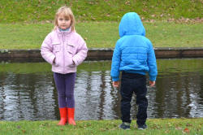
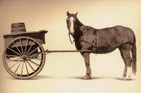

Gender

This guide is about language, primarily, not about cultural
issues or issues of gender equality and political and economic
power.
It is, however, difficult to
disentangle all the issues and much of this guide is unavoidably
concerned with cultural, individual and social issues. So, before we
begin, let's get one term straight.
Defining gender |
The sixth edition of the Oxford Concise Dictionary (1976) defines gender as
a grammatical classification ... of objects roughly corresponding to the two sexes and sexlessness.
Fowler, for long the go-to, final authority on English usage, stated quite firmly:
gender, n., is a grammatical term only.
To talk of persons or creatures of the masculine or feminine g.,
meaning of the male or female sex, is either a jocularity
(permissible or not according to context) or a blunder.
(Fowler, 1965:221)
Later dictionaries are a little more daring so, for example, The Cambridge International Dictionary of English (1995) defines the term thus:
the physical and/or social condition of being male or female, or (specialised) the grammatical divisions of masculine, feminine or neuter into which nouns, adjectives etc. are divided in some languages
Twenty-five years later, the term is now defined in two ways as:
- either of the two sexes (male and female), especially when considered with reference to social and cultural differences rather than biological ones. The term is also used more broadly to denote a range of identities that do not correspond to established ideas of male and female.
- (in languages such as Latin, French, and German) each of the
classes (typically masculine, feminine, common, neuter) of
nouns and pronouns distinguished by the different
inflections which they have and which they require in words
syntactically associated with them.
(Google, 2020, definitions supplied by Oxford Languages)
The upshot of all this change and confusion, which can mostly be traced to the 1970s and 1980s, is that there are now three definitions of gender in common use:
- gender as a grammatical category in some languages
- gender to mean sex or sexual orientation
- gender as a social role
Here, we are mostly concerned with the first of these definitions but, because the term is so loosely and carelessly used, it will not be possible to maintain a strict approach. Nor shall we try.
Genderless and gendered languages |
Simplifying things rather too much, there are three types of languages:
- Genderless languages
Some languages are truly genderless, having no categories at all to denote gender so there are no distinctions between nouns and none between pronouns, either. Such languages may have nouns which are gender specific, such as sister, brother, aunt, uncle etc. but that's where it stops.
Fully genderless languages include: Armenian, most Austronesian languages (such as the Polynesian languages, Malay and Indonesian and Malagasy), Bengali, Burmese, Chinese languages, Dravidian languages of South India, Estonian, Finnish, Hungarian, Japanese, Korean, Persian (Farsi), Thai, Turkic languages and Vietnamese. - Natural gender languages
Natural gender languages are genderless in the sense that they have no marking on nouns or adjectives etc. for gender but may have gender-marked pronouns such as she, he, they (feminine), they (masculine) and so on.
Natural gender languages include:
Afrikaans (but not Dutch), English, Swedish and Tamil (which is also considered genderless) and a range of others. - Gendered languages
These languages differentiate between at least two and often three genders, usually masculine, feminine and neuter.
Languages with two genders (masculine and feminine or common and neuter) include: Arabic (most varieties), Danish, Dutch, French, Gujarati, Hebrew, Hindi, Italian, Kurdish, Latvian, Lithuanian, Portuguese, Punjabi, Spanish, Tagalog and Urdu.
Languages which used to have a three-gender system (masculine–feminine–neuter) including Danish and Swedish, for example, have lost the distinctions between masculine and feminine and they have merged in what is called a common gender. So, nouns denoting people are usually of common gender (as in English) but other nouns may be of either gender.
Languages which differentiate between three genders, as English does but only in the singular pronoun system, include: Belarusian, Bulgarian, Croatian, Czech, German, Greek, Icelandic, Macedonian, Marathi, Norwegian, Polish, Romanian, Russian, Serbian, Slovak, Slovene, Telugu, Ukrainian and Yiddish.
However, the Slavic languages in this list recognise also the distinction between animate and inanimate entities.
A bewildering range of genders is present in the grammars of other languages including separate categories for animals, countable nouns, inanimate nouns, uncountable nouns, abstract nouns, fluids, edibility vs. inedibility and so on. Swahili has 18 noun classes and some languages have even more.
As a general rule, Indo-European languages which have a gender system base the categories on sex but African languages and others in North and South America have a gender system based on other characteristics, notably animate vs. inanimate but there are many others.
Markedness |
Some features of a language are simple and
prototypical so they are referred to as unmarked forms but others are
distinguished or marked in some way. For example, we do not
usually suggest that house is the singular of houses
but rather that houses is the plural of house.
The plural form is marked (in this case by the '-s' suffix)
but the singular is unmarked. That is the normal way plurals
are formed in English.
In other words, markedness refers to the distinguishing form rather than the base
form of a word in a language. So, for example, the verb in:
Mary came to the house
is marked (by the mutation of the first vowel from 'o' to 'a' to
show the tense) but in:
I will arrive
the verb arrive is unmarked for tense or person. The
whole clause is, however, marked to show future reference with the
auxiliary verb, will.
In:
She took the money
we also have a marked form of the verb (took, not the base
form take). We also have a marked form of the noun,
money, with the definite article, signalling that the hearer is
aware of which money is in question. The clause as a whole is
not marked because, in English, we have the canonical word order of
Subject-Verb-Object and that is what is apparent in this example.
On the other hand, we can mark the syntax and say:
Did she take the money?
in which case the clause is marked as a question.
By the same token, the unmarked form of the adjective is used to ask
a question such as:
How old is she?
because the marked form is the antonym, young, and we do
not usually ask
How young is she?
unless we have a pre-formed idea about her age. Even obviously
young entities retain the unmarked form so we ask:
How old is the puppy?
A good deal more can be found in the guide to markedness,
linked below.
 |
Nouns |
Overwhelmingly, any language which distinguishes between
masculine and feminine forms of nouns will do so by adding marking
to make the feminine form and assuming the unmarked form is
masculine. The simple way to determine this is to check the
dictionary entries for nouns. Lexicographers of gendered
languages will use the masculine version of the noun as the headword
and usually note the female endings separately, or in brackets.
Even in those languages which have three genders, one being neuter,
lexicographers will follow this format and dictionaries will usually
present the masculine form of, say, an article or adjective, and
note the distinctions for feminine and neuter in brackets.
Plurals, too, are a sign of this so, for example in Spanish, a group of 100 friends which contains a single male representative will be referred to using the male plural ending (amigos, not amigas). In French, too, my father's friends will be translated as les amis de mon père with the masculine plural ending on the word ami, not the feminine plural amies. Italian will do the same, using amici, not amiche unless it is quite clear from the context that ALL the friends are female. Greek, another gendered language with three genders, will also make the plural of friends as φίλοι (feelee), the masculine plural, not φίλες (feeles), the feminine plural, when it is clear that the group contains male as well as female people.
Genderless or natural gender languages, retain some elements of a
gendered noun system so the languages have separate lexemes for male
and female relations and some titles, roles or professions.
This, too, is variable with some languages distinguishing male from
female cousins and some, such as English, making no distinction.
It is also true that even internally, most languages are
inconsistent so English distinguishes between a host (male)
and a hostess (female) but does not distinguish between
guests in the same way (there is no word guestess) and
while it can distinguish a poet from a poetess, it
cannot distinguish the sex of a painter, violinist, composer,
teacher
or writer.
It can also, but very rarely does, distinguish between maestro as
a male honorific title and maestra.
Animals are notoriously inconsistently treated: English, French,
Spanish, Chinese and many other languages can distinguish between
lion (male) ands lioness (female) but many
languages, including Bengali, Nepali, Basque, Hausa and Irish do not
make a distinction. Those that do distinguish predictably mark
the male form in some way (often by affixation) to signal the
female.
There are, of course, exceptions but they are exceptions and they
are rare. English, for example, marks the male form when
distinguishing between bride and bridegroom and between
widow and
widower. It is also true that, in English, the words
goose and duck are unmarked for gender but
gander and drake are marked male forms.
Some nouns in English have unrelated structural terms for male and
female representatives of people so, e.g., English has king and
queen, brother and sister, monk and
nun. But, in Spanish, for example, all the words are
related to each other very obviously and the language has only three base lexemes with just the endings changed to denote
sex. In Spanish, the words are: rey, reina, hermano,
hermana, monje and monja, respectively.
German notes the female by an ending on king (König-in)
but has unrelated terms for the others and so on across languages
with Malay having six distinct lexemes like English and others
varying in how the words are structurally related, if at all.
The technical term for gender-neutral words is, incidentally, epicene so words such as teacher, sibling, cousin, parent, engineer, driver, gardener, player, hotelier etc. may apply equally to male and female people (or, indeed, to any other sexual identity) in English. Languages which are more heavily marked for gender may have male and female versions of all of those and fewer epicene words.
Adjectives and articles |
|
|
a broken pencil ein gebrochener Bleistift un lapiz roto un crayon cassé |
In most gendered languages, it is compulsory to make the adjective
and article forms agree with the noun which governs them so, too, we find the
dictionary entries for adjectives in the masculine form and the
feminine form denoted, usually in brackets, after it. Even
online translating programs will follow this convention (although
some are beginning to offer the alternative feminine versions of
adjectives).
The examples above show the system in English, German, Spanish and
French. In the latter three cases, the adjectives are marked
to show the gender of the noun and the article, too, takes a
gender-specific form, masculine in this case because the word for
pencil happens to be
masculine in all three languages. Change the noun for a noun
of a different gender, say, cup, which happens to be
feminine in all these languages, and we have to change both the
article and the adjective form to get:
eine gebrochene
Tasse
una taza rota
une tasse cassée
Not so in English, as we know, because it is a natural gender
language so we still have:
a broken cup
and no changes are made to the article or adjective.
Within gendered languages, too, there are distinctions so, for
example, Romance and Slavic languages generally insist on agreement
between the noun and the adjective in all circumstances whereas
Germanic languages only make the adjective agree when it is used
attributively (i.e., immediately before or after the noun with no
linking verb such as be, seem, grow etc.).
These examples would be very different if we venture beyond the
three carefully chosen example languages here because the gender of
inanimate nouns is random and arbitrary. In Czech, for
example, which, like German, has three genders, the word for
pencil happens to be feminine and the word for cup is
masculine so you need to make different changes to the adjective
(but you would be relieved of the need to change an article: Czech
doesn't use them). In Greek, it happens that both words are
masculine so no changes would be required.
Nouns for groups of people are variably gendered across languages,
so, for example, the German and Greek words for group
happen to be feminine (die Gruppe, η ομάδα [ee omada]) and they
require a feminine pronoun to represent them, even though all the
members of the group may be male. In those languages:
The group of men has arrived and it/they have
settled in
would translate literally as:
The group of men has arrived and she has
settled in
Pronouns |
Gendered languages usually have well-developed pronoun systems
whereas genderless languages will not vary the pronouns at all
and most natural gendered languages such as English will note gender
in the pronoun system only but inconsistently.
English, for example, can distinguish
between he, she and it but has no way to mark
gender with they at all. The language does, however,
have a singular unmarked third-person pronoun in one but
its use is somewhat limited and formal.
Gendered languages may do things
differently and French, for example, distinguishes between they
feminine and they masculine: elles (feminine)
vs. ils (masculine) and so does Italian with
esse (feminine) and essi (masculine). and Spanish with
ellas (feminine) and ellos (masculine).
However, within and between gendered languages, the systems vary.
German is an example of a gendered language (three genders) in which
the word for they is not marked for gender but the pronoun
for you takes three distinct forms marked for number and
formality but not for gender.
English does not mark the relative pronoun who for gender or
number but some language do. Oddly, otherwise quite heavily
marked languages such as French and Spanish do not mark gender on
relative pronouns but German, because of its habit of using the
definite article as the relative pronoun, makes a distinction so,
for example:
She's the woman who sold me the shirt
translates as:
Sie ist die Frau, die mir das Hemd verkauft
hat
but
He's the man who sold me the shirt
translates as
Er ist der Mann, der mir das Hemd verkauft
hat
Many languages do not mark the second-person pronouns for you for gender
but some, such as Spanish, Hindi and the Afro-asiatic family which includes
Hebrew, Arabic, Amharic, Berber, and Hausa do. In these
languages, the sex of the person one is addressing affects the
pronoun use but when addressing a mixed group, again, the masculine
form is conventionally used.
Spanish is also an example of a language which marks the gender on
the plural first person, we (nosotros vs. nosotras),
making it one of the most heavily gender marked of the Indo-European
family. In some languages, such as Vietnamese and some Chinese
dialects, forms of the pronoun we may be marked to signal
whether it includes you or not so there is a difference
between:
We (including you) are going out
and
We (not including you) are going out
with a different form of the pronoun for we in each case.
Even so, however, the pronoun will not be marked for gender.
The English pronoun,
we, on the other hand may or may not include the addressee
and may even include people not present (i.e., they).
Italian, another Romance language, doesn't take things quite so far
but, in common with many European languages, marks the pronoun
you for politeness and number.
Verbs |
Nouns, adjectives and pronouns do not complete the list and in
some languages, verbs, too, are gender marked. In Russian, for
example, past-tense forms agree with the gender of the subject so,
He ate
translates as
Он ел
but
She ate
is
Она съела
Czech, Polish and most other Slavic languages show parallel
distinctions.
In Hindi, the form of the verb will always depend
on the sex of the speaker so, for example:
I eat
may translate as
khaata hoon
if the speaker is male but is
khaati hoon
if the speaker is female.
Equally, the verb form will change to distinguish between
The boy eats
and
The girl eats
In other languages, more radical changes are observable and in
languages with as many as 10 genders, the situation becomes deeply
complex.
|  |
Language and sexism |
| What sex is the child on the right? |
The term gender is, as we saw at the outset, also used to refer to sex and social role but the problems arise when the meanings are seen as synonymous with the term used to refer to how languages classify the world. The meanings are not, it bears repeating, the same.
 |
Grammar |
Accusations of sexist use of language are not uncommon and are
often based on the assumption that people's selection of grammatical
structures reflects the way they think so, for example, to state:
When a student enters the college he will be
given his personal timetable
is considered unduly to assume that all students are male. In
fact, until quite recently (i.e., the last 30 or so years), the use
of he, him, his as unmarked pronouns and determiners for all people was
conventional as it remains in many gendered languages as we saw
above. For example:
The discourse analyst, with his 'ordinary
language' data, is committed to quite a different view of the
rule-governed aspects of a language. Indeed, he may wish to
discuss ...
(Brown and Yule, 1983:22)
To suggest that those who
used the pronoun he and the determiner his as an unmarked form were assuming that no
discourse analyst
could be female is patently unreasonable especially considering that
Brown's first name is Gillian. It is a fair bet that were that
passage to be written today, it would not have been phrased quite
like that.
Another commonly used source, published a year earlier (Seaton,
1982) uses he, his, him throughout as the unmarked form to
refer to both learners and teachers but it is doubtful whether the
author had not at least considered the possibility that some of the
teachers and learners he has encountered are female. Here, for
example, is Seaton's introduction (op cit.:98) to a
discussion of learning theory:
... the child who learns his mother tongue is at the same time discovering the possibilities of his own organs and exploring his environment ... It is obvious that for him hearing must precede speaking. It is equally obvious that he is dependent on what he hears as he has not yet learned to read and write.
Nowadays, however, people will usually take one of six routes to avoid accusatory fingers:
- use a plural as in
When students enter the college they will be given their personal timetables - use the unmarked plural pronoun as a singular reference as
in
When a student enters the college they will be given their personal timetable - insert the alternative as in
When a student enters the college he/she (or she/he or s/he) will be given his/her (or her/his) personal timetable - remove the determiner or pronoun altogether by using a
passive or rephrasing as in
A personal timetable will be given to every student who enters the college - rotate the use of male and female pronouns throughout the
text to provide a balance so that this instance may be:
When a student enters the college she will be given her personal timetable
and the next instance will use he, him and/or his. - use the feminine forms in all cases to make a socio-political statement of some kind.
The second of these alternatives is not, incidentally, a new
invention or a grammatically challenged form. The use of
they, them, their, theirs as unmarked singular pronouns and
determiners has been in
common use in English for at least 400 years. At times, for
example, in:
Whoever said that doesn't know their facts
it is almost unavoidable.
The selection of less obviously gendered functional words is
determined, however, not by changes in the language but by changes
in the people who use the language.
Lexis: gender for people |
The use of gender-marked lexis is also something that most writers are at pains to avoid although the alternatives sometimes lead to clumsy expression and the impression that the language user is trying rather too hard. Some non-marked expressions are, however, quite natural and easy to use and many are instances of simply dropping the suffix. Examples are:
| Marked forms | vs. | Unmarked forms |
| actor, actress | actor | |
| author, authoress | author | |
| businessman, businesswoman | business person | |
| caveman, cave woman | cave dweller | |
| chairman, chairwoman | chair, chairperson | |
| congressman, congresswoman | congressional representative | |
| fireman, fire woman | fire fighter | |
| headmaster, headmistress | school principal / head teacher | |
| housewife, house husband | homemaker | |
| juryman, jurywoman | jury member | |
| layman, laywoman | lay person | |
| mankind | humans / people | |
| male midwife, midwife | midwife | |
| male nurse, nurse | nurse | |
| policeman, policewoman | police officer | |
| postman, post woman | mail carrier | |
| priest, priestess | priest | |
| salesman, saleswoman | salesperson / sales representative | |
| steward, stewardess | flight attendant / steward | |
| usher, usherette | usher | |
| weatherman, weather woman | weather forecaster |
Others are less easy so many would not accept, for example,
yachtsperson, middleperson, infantryperson and lots more
although we can avoid huntsperson and work person
by an easy substitution with hunter and worker.
When nouns are compounded like this, it is often difficult to find
acceptable alternatives so alderman, bogeyman, clergyman,
draughtsman, dustman, everyman, freeman, frogman, hangman, hit-man, landsman,
manmade, manpower, manslaughter, ombudsman, quarryman, showman,
snowman, taxman, watchman along with many others remain without
clear alternatives.
The European Parliament has issued (2018) a list of terms
recommended for both sexes in this regard including many of those in
the table above, although the advice is unhelpful when it comes to
fisherman / fishermen because, as the author notes,
'fisher' and 'fisherfolk' are not
widely accepted. The Oxford English Dictionary,
incidentally, labels fisher as an archaic term but it is
increasingly seen in academia. It is also noted that
no gender-neutral term has been
successfully proposed for waiter / waitress.
It seems server might suffice as a useful importation from
North American usage.
Fortunately, as we saw above, English is replete with epicene words
which need no adjustment. Some languages are not so fortunate.
Other languages, already heavily gender marked such as German and
Spanish are, in fact, proceeding in the opposite direction by adding
suffixes to names for people which previously only existed in the
male form so, for example, European citizens are now described in
official documents in German as Europäische Bürger und
Bürgerinnen and in Spanish as Ciudadanas europeas y
Ciudadanos europeos which are wordier and clumsier, many
maintain, than the previous
formulations.
It was pointed out above that the use of masculine pronouns for all persons does not necessarily betoken the fact that a speaker/writer assumes that everyone is male or that males are superior beings. The use of the masculine forms of pronouns in this way is (was) common to both male and female users of the language. What matters now is that many will assume that such uses do mean that the language user is a prejudiced dinosaur. Why should this be?
|  |
The direction of causality and assumptions about language and thought |
Within the genre of popular science there is an uneasy mix of assumptions about language and thought. For example:
How we speak affects how we think and how we interpret the world around us. So, as we are working to reimagine our defaults around gender and build a more socially-conscious and inclusive culture, we also need to reckon with language.
The languages we speak influence how we construct society, and can even set the precedent for gender equality in our social systems.
and
Language reform is possible, but it takes time. This doesn’t necessarily mean dismantling existing systems, but rather making space for more inclusive options. Instead of allowing language to construct how we view the world, we could push in the other direction, questioning how we can reflect our world through our choice of language.
all citations from Dutta (2020) but even a casual web search will reveal many parallel texts.
There are three principles at work here, it seems:
- Citation 1. implies that our first languages somehow
determine our thought processes,
how we think and how we interpret the world. The direction of
causality is:
language form → mental constructs - Citation 2. suggests that cultural factors are determined by
the language a culture uses, The
languages we speak influence how
we construct society, and can even set the precedent for gender
equality, so the direction of causality is:
language form → social relationships - Citation three contains two implications:
- that how we think determines how we use language (how
we can reflect our world through our choice of language) so the
direction of causality is now:
mental constructs → language form
because - we can change how people think by changing how we use
language (i.e., reforming its structural and lexical
features to conform to our notions of equality and
inclusiveness) Instead of
allowing language to construct how we view the world, we
could push in the other direction) so the direction of causality is:
new language forms → better and more inclusive thought processes
- that how we think determines how we use language (how
we can reflect our world through our choice of language) so the
direction of causality is now:
None of these suggestions is unarguable, of course.
Two of
them are internally contradictory taken alone because we can't have
it both ways. Either we start from the hypothesis that our
thought processes (what Pinker (2007:82) and others have called mentalese) determine our language use or that our native languages
determine how we are able to think. The
latter assumption underlies attempts to ban what is seen as sexist
language use and replace it with genderless or differently gendered
forms in order to change how people think: psycho-social
engineering via language reform.
Elsewhere on this site, linked below, there is a guide to theories
of language and thought so we won't rehearse all the arguments here.
What we can say is that, although the jury is still out, the current
trend among many professional linguists, philosophers and
neurolinguists is towards rejecting the view that thought is
determined by language. Pinker puts it this way:
there is no scientific evidence that languages
dramatically shape their speakers' ways of thinking.
(Pinker, 2007:57)
Here's another citation along the same lines:
In March 2020, an open letter called on the
Oxford Dictionary of English to update its entry for the word
‘woman’. The dictionary, which is used in many mobile phones, offers
words such as ‘bitch’, ‘bird’, ‘wench’, ‘petticoat’, ‘bint’, ‘mare’,
‘biddy’ and ‘filly’ as alternatives to ‘woman’. Under examples of
how ‘woman’ could be used in a sentence, it includes the phrase: “I
told you to be home when I get home, little woman.”
The letter explained: “Synonyms and examples such as these when
offered without context reinforce negative stereotypes about women
and centre men. That’s dangerous because language has real world
implications. It shapes perceptions and influences the way women are
treated.”
(Bedi & Cameron, undated)
The assertion here is plain:
language ... shapes
perceptions, not the other way around.
There is, it bears repeating, no consensus among professional
linguists but many would dismiss that assertion as arrant nonsense.
The rejection of the masculine pronouns for unmarked use has been called pronoun envy and has been rejected on the grounds that, as we saw above, gender is a grammatical, not a social or personal, phenomenon. Here's another citation:
The fact that the masculine is the unmarked
gender in English (or that the feminine is unmarked in the language
of the Tunica Indians) is simply a feature of grammar. It is
unlikely to be an impediment to any change in the patterns of the
sexual division of labor toward which our society may wish to
evolve. There is really no cause for anxiety or pronoun-envy on the
part of those seeking such changes.
(Anon, in The Harvard Crimson, 1971)
Incidentally, according to Wikipedia, The last known native speaker of Tunica, Sesostrie Youchigant, died in 1948.
Newspeak?the whole aim of Newspeak is to narrow the range of thought |
The idea of Newspeak is one of George Orwell's abiding legacies.
It is an example of the fact that the assumption
that reforming the language can reform the way people think is not a
new idea.
In the novel, Chapter 5, a lexicographer working on a new edition of
the Newspeak dictionary explains that in order to make seditious and
treasonable thoughts impossible, the language will be reformed to
make the thoughts impossible to express and, by implication,
literally unthinkable.
You will not be alone in noticing a certain irony in the fact that
those who champion equal rights and many other freedoms are also in
the forefront of efforts to expunge what are seen as gender-biased
language items, by legislation if necessary.
If it is true that we can impose changes to how people think by
legislation concerning the language they are allowed to use, then we
have a serious ethical issue on our hands. Fortunately, it
probably isn't.
Modern organisations do not go quite as far as Big Brother's lexicographers but there is a consistent and noticeable trend towards imposing language reform from above. For example:
Over the last three decades, supranational
organisations such as the United Nations, the Council of Europe and
the European Union have become aware of social inequalities between
women and men. One of the aspects these organisations have
highlighted is that of language and its sociocultural repercussions.
These organisations have noted that the systematic use of
gender-neutral terminology and wording is an important factor in the
attainment of equality between women and men. As a result, they have
taken steps to promote the elimination and avoidance of
sexist language.
(Teso, E, 2010:3, emphasis added)
The European Parliament puts it this way:
Using gender-fair and inclusive language also
helps reduce gender stereotyping, promotes social change and
contributes to achieving gender equality.
(European Parliament 2018)
and that is an assumption for which no evidence at all is provided.
Many, clinging to the presumption that how our language is
formed determines how we think, reason that it follows that we can, by reforming
the language, reform the thinking of individuals and that will lead to a reformed, more
equal and more inclusive society. Some efforts have been
made in this direction, as we shall see. The corollary is, of
course, that the way a person expresses himself/herself,
themselves/themself betrays his/her/their prejudices.
The evidence seems, however, to show that more equitable modes of
thought have already led to significant changes in pronoun use in
English, hence the rejection of he, his, him as unmarked
pronouns and the consistent attempts by writers in all fields to use
plurals or the plural third-person pronouns and determiners to
signal a singular gender-unmarked form.
It is also shown by the falling use of gender-marked nouns such as
actress, manageress, policeman/woman, cameraman/woman and
so on although the process is very slow and only recently detectable
in Google Ngram Viewer.
Both these phenomena are, it seems, indicative of a direction of
causality from thought patterns to language choices, not the other
way around.
Problems with language reform and neo-pronouns |
Nouns belong to an open class and the introduction of new ones such as chairperson, spokesperson and so on is a comparatively simple matter which surprises and offends few people. Pronouns, on the other hand, are a closed-class set of words and the introduction of new ones is a more difficult undertaking. The loss of forms is a frequent matter, however, and English has already dispensed with the pronouns and determiners thou, thee, thy, thine in favour of you, your, yours as well as endings and mutations to pronouns to signal cases.
Alternative pronouns for he, she, it; him, her, it; hers, his, its; herself, himself, itself have often been suggested with the best known being the so-called Spivak pronouns of which there are at least three variants. Like this:
| Instead of | currently | we could have | for example |
| subject pronoun | he, she, it | e, ai, ey or em | E likes chocolate |
| object pronoun | him, her, it | e, em or aer | I like aer |
| reflexive pronoun | himself, herself, itself | eeself, emself or aerself | E talked to emself |
| possessive pronoun | his, hers, its | ees, ems, aers or eirs | That is aers |
| possessive determiner | his, her, its | es, aer or ees | That is aer dog |
There is, of course, a reason why these are probably unfamiliar
to you – almost nobody uses them. Pronunciation is not
yet conventionalised and varies.
Other, simpler systems have been proposed such as the use of
hizzer instead of the marked his, hers, her and so on.
None of those has caught on, either.
There is some evidence that the use of themself as an
alternative to himself and herself (but not
itself) is gaining some traction but that is the result of
people consciously or unconsciously avoiding gender marking, not the
result of the deliberate introduction of a new pronoun.
Neo-pronouns
Other unmarked pronoun systems for deliberate inclusion in English
have been proposed and they include, for reference here, with
examples of their use:
| Subject | Object | Possessive determiner | Possessive pronoun | Reflexive / Emphatic | |
| They (unmarked) | they arrived | I told them | It's their house | it's theirs | they served themself / themselves |
| Ne | ne arrived | I told nem | It's nir house | it's nirs | ne served nemself |
| Ve | ve arrived | I told ver | it's vis house | it's vis | ve served verself |
| Ze/Zie and Hir | ze arrived | I told hir | it's hir house | it's hirs | ze served hirself |
| Ze/Zie and Zir | ze arrived | I told zir | it's zir house | it's zirs | ze served zirself |
| Xe | xe arrvied | I told xem | it's xyr house | it's xyrs | xe served xemself |
Pronunciation of these neo-pronouns is also not settled and, when
they are used at all, is quite dramatically variable. However,
a guideline is:
ne, nem, nir and nirs are
pronounced as /niː/, /nem/, /nɪə/ and /nɪəz/
ve, ver and vis are pronounced
as /viː/, /ver/ and /vɪz/
ze, zie, zir, zirs, hir and hirs
are pronounced as /ziː/, /ziː/, /zɪə/, /zɪəz/, and /hɪə/ and /hɪəz/
xe, xem, xyr and xyrs are
pronounced as /ziː/, /zem/, /zɪə/ and /zɪəz/
If you encounter a need to use these systems, it is probably as well
to ask or inform your interlocutor concerning the correct (or, at
least, preferred) pronunciations. It will also take a bit of
practice.
(Reference for this bit: University of
North Carolina, n.d. at
https://intercultural.uncg.edu/wp-content/uploads/Neopronouns-Explained-UNCG-Intercultural-Engagement.pdf)
An issue here is that the third-person pronouns are more closely to
do with internal text referencing than first- or second-person
pronouns which are involved with deixis (to which there is a guide,
linked below). For example in:
The driver stopped and she walked over to me
it is clear that the speaker wishes to make clear what sex the
driver was and to remove that reference makes the language less
precise and less effective. This usual anaphoric use of the
pronoun system could not be accommodated in a language that did not
gender mark pronouns.
(The only innovation in regard to marking which has been successful
is the introduction of Ms to replace both Miss and
Mrs which is now ubiquitous in most English-speaking
cultures but that is, of course still gender marked. No
alternative form of address usable with both men and women has been
introduced and one still hears Ladies and Gentlemen as
often as colleagues, people, y'all and so on. The use of
fellow workers has been recently disparaged in favour of
co-workers because of the association of fellow
with men.)
 |
Gendered languages, thought and social relationships |
Here we need to bear an important distinction in mind between
sexist use of language and gendered language use.
The former implies language used deliberately or unconsciously to
demean or negatively characterise usually female people. The
latter is an academic description of a language in use and carries
no implication of a deliberate or unconsciously prejudiced approach
to other people. People can be sexist or racist and so can a
few words but a language cannot be prejudiced any more than a language can be
religious, politically right wing or socialist. Confusing or
conflating language use and language leads to a certain amount of trouble.
Advocates of linguistic engineering are sometimes tempted to
suggest that gendered languages lead to gender-unequal societies.
In other words, gendered languages are sexist languages or, at
least, embed sexism in conventional speech.
What's the evidence?
There is some from studies which suggest that speakers of languages
with two genders only, masculine and feminine, do, in fact, think
about things differently depending on whether the object is feminine
or masculine. Borodsky, Schmidt and Phillips (probably
2003), having asserted in the first sentence that:
Speakers of different languages must attend to and encode strikingly different aspects of the world in order to use their language properly.
go on to suggest that one of the ways in which first-language learners of a language, i.e., children, acquire a gendered noun system is to focus on what they call the masculine or feminine properties of the object so, for example, they will:
focus on some property of that noun's referent
that may pick it out as masculine or feminine. For example, if the
word for "sun" is masculine in one's language, one might try to
remember this by conceiving of the sun in terms of what are
perceived as stereotypically masculine properties like powerful and
threatening. If the word for "sun" is feminine, on the other hand,
one might focus on its warming and nourishing qualities.
(Op cit.:65)
This may prove efficacious if one accepts such stereotypical properties as
being universals but it is less obvious how, for example, one
attaches feminine properties to a microbe (as in German) or
masculine properties to a table (also German) or feminine
properties to the same piece of furniture (as in French and
Spanish). The word for a stone happens to be feminine
in Spanish and French but masculine in German and Czech and it is
unclear how children learning any of those as a first language will
be able to assign feminine or masculine characteristics to the word
however imaginative we know them to be.
In Russian, as the same writers point out, Monday, Tuesday
and Thursday are masculine and Wednesday, Friday
and Saturday are feminine. In Greek, all days of the
week are feminine except Saturday so there appears to be no
systematic assignment of gender to objects by the characteristics they exhibit
(whatever those presumed characteristics are).
In fact, across languages the assignment of gender to inanimate
objects is fundamentally random (or based on, for example,
affixation where all diminutives are neuter or whatever).
There is no obvious reason why the moon should be feminine
in French, masculine in German and neuter in Russian.
There is also some evidence that languages which have only two
genders (masculine and feminine) influence their speakers more in
assigning certain characteristics to feminine and masculine nouns
than languages with three genders including neuter.
These investigators sound a useful cautionary note:
Evidence collected from such subjective
judgments cannot reveal whether gender is actually part of a
person's conceptual representation of an object, or whether (left
with no other criterion for making the subjective judgment) the
person just explicitly decided to use grammatical gender in
answering the experimenter's questions.
(Ibid: 67)
A different tack is taken by Prewitt-Freilino, Caswell and Laakso
(2011) who set out to investigate whether nations with gendered main
languages showed differences from those with genderless or natural
gender main languages in terms of how equal the societies are in
treating people of different sexes.
They surveyed 111 languages (73 gendered, 12 natural gender, and 26
genderless) and took as their measure of (in)equality the 2009 World
Economic Forum’s Global Gender Gap Report (the GGG report).
The mean score on that scale is .68 and the higher the score, the
greater the level of sex equality in the society.
The results from the table they present are somewhat mixed with, for
example, Chile, China, Colombia, Honduras, Hungary, Thailand,
Ukraine and Croatia all scoring .69 (i.e., just above average)
although China, Hungary and Thailand have genderless languages with
the other nations having predominantly gendered languages. It
is the case that the four highest scoring (i.e., most equal) nations
were Finland, Norway, Sweden and Iceland, all of which have a
natural-gender main languages. Of the genderless language
countries, 10 scored less than the mean and 16 at or above the mean.
None scored higher than the four natural gender languages.
In addition to the general index, the report looked at other
measures of (in)equality concerning economic participation,
educational attainment, health and political empowerment.
The figures presented (p281) show that on all five of these
measures, gendered language nations score lower in three cases out
of five than natural gender language nations and in four out of five
cases when compared to genderless-language nations. Only in
terms of health and survival was no difference in equality observed.
The evidence is patchy and sometimes controversial because social
parameters such as equality are notoriously difficult to measure.
The writers nevertheless concluded:
it appears that countries that speak gendered
languages evidence less gender equality than countries that speak
natural gender or genderless languages–especially in terms of gender
differences in economic participation—even when other factors that
could influence variations in gender equality (e.g., religious
tradition, system of government) are taken into account ...
and
countries that speak natural gender languages may be even more apt
to exhibit gender equality—especially in the form of women’s greater
access to political empowerment—than in countries where gendered or
genderless languages are spoken.
(p278)
These writers finish with the heavily hedged comment that:
Moreover, although language may very well play
a role in gender equality and language reform could be a fruitful
avenue for improving the status of women, it is important to
remember that linguistic modification must be accompanied by social
and political adjustments in order to truly change existing
asymmetries in gender.
(p281)
Which leaves us back where we started with an assumption that language can be reformed in order to reform social relations, not vice versa, although there is an admission here that it needs to go hand-in-hand with social and political adjustments.
Lest we jump to a conclusion in this respect, it is worth noting
that, for example, Chinese, Estonian, Farsi, Finnish, Lithuanian,
Mongolian, Turkish and Thai are all genderless languages but the
nations in which these languages are overwhelmingly spoken exhibit
very different levels of social equality between men and women,
ranging from .58 to .83 on the general GGG report index. If we
look at the political empowerment figures, the differences are even
starker, ranging from .02 to .57 across these 8 genderless-language
nations.
It is also the case, as we saw above that gender concerns more than
masculine or feminine divisions, especially in, for example, Bantu
languages in which there may be as many as 10 genders, none of which
concerns sex.
Pushing at an open door |
Notwithstanding the objections made here to the idea that
language reform can precede changes in thought patterns and that
these then feed into reforming society to make it more equitable, it
does seem to be the case that once more equitable and enlightened
ways of thinking become more widespread, the door is opened (or at
least pushed ajar) for a reformed use of the language to become the
accepted convention. What this implies is that people should
wait until social customs and attitudes have changed enough before
trying to introduce language changes to match the new norms.
Many public and private organisations already have
gender-neutral language policies in place but these, it should be
emphasised, usually get imposed after new social
constructs and attitudes have become embedded. They are the
result, not the cause, of changes in attitudes.
It is certainly the case, for example, that the singular, unmarked
use of the pronouns they, them and theirs and the
possessive determiner their is gaining widespread acceptance. It
is now quite clear to nearly all users of the language that using
he to subsume reference to she is not acceptable
and will grate on many readers and listeners.
It is a comparatively straightforward change to make in English, of
course, because only four words already in common use need to be
reassigned and none needs to be reconfigured.
In other languages, where pronouns take different forms depending on
case, number and gender, it is a more complicated procedure and
removing the marking from languages which apply gender to all nouns
is a significant step which, as yet, few are willing to take.
We saw above that many languages, including most Slavic ones, mark
verbs for gender and removing that morphological phenomenon is a
challenging task.
Peninsular Spanish is often held up as a clear example of the
difficulties of reforming a language which is very heavily marked
for gender. Research by Lomotey (undated) showed that despite
attempts to impose, from above, anti-sexist language rules, 93% of
the examples investigated showed continuing use of sexist language.
The most obvious cases were of masculine plurals for groups including
both males and females. From that paper, for example:
Some of the words which appeared most
frequently in the masculine generic form were ciudadanos 'citizens',
españoles 'spaniards', empleados 'employees', amigos 'friends',
padres 'parents', hijos 'children', funcionarios 'workers',
hombre(s) 'mankind', jóvenes 'youth', lector 'reader' and políticos
'politicians'.
(Lomotey, n.d.:173)
Partly, Lomotey points out (p169) this is caused by the continuing opposition to language reform by, among others, The Spanish Royal Academy which is concerned to maintain the purity of the Spanish language.
There is clearly a long way to go and, while English is very weakly gender marked in comparison to many languages, it is still proving very difficult to introduce change. The challenge for linguistic engineers in other languages is much greater.
 |
In the classroom |
It would do our learners a disservice to be too careful about
what we teach and what language we suggest they use to avoid any
accusations of sexist language and the use of gender-marked forms
because our aim is, probably, to supply our learners with the
language that native speakers naturally use. Much of that is
gender marked, some wisely and some unavoidably so.
Teaching the Spivak pronouns would, therefore, seem
counterproductive however much we want to appear equitable and
inclusive in our language use.
Fortunately, unlike Spanish and many other languages, English has
quite low levels of gender marking, most of which can be avoided
easily by rephrasing or using a single lexeme for both male and
female entities and a single pronoun for male and female referents
regardless of number and sex.
This does not mean, however, that we do not need to show some
sensitivity to the ways people try to keep unnecessary and possibly
biased gender marking out of their language use. Choosing or
designing materials which do not use, for example, terms such as
spaceman, manageress, workman and so on in favour of those that
use astronaut, manager and worker is a
straightforward matter. It is also straightforward to teach
the use of they, them, theirs, their as singular pronouns
and a possessive determiner, along
with some notification that it may be frowned on in formal academic
writing.
(Teaching themself as an unmarked singular reflexive
pronoun may currently be a step too far because most authorities
note that it is rare, disputed or not widely accepted
(oed.com) or remains quite rare in published, edited text (merriam-webster.com).
It
has been noted that themself was the normal form of the third
person plural reflexive pronoun until about 1540. It had
disappeared by about 1570. Later, themselves became
the standard form.
The form may be re-emerging but an expression such as:
The manager may consider themself an expert
will still not be widely welcomed in formal writing.)
It is also the case that students of the language who need it for
more than informal chitchat will be well advised to avoid upsetting
their socially or grammatically sensitive hearers and readers by
selecting genderless items over gender-marked terms.
A little awareness raising through simple practice is called for.
For example:
| Rephrase the sentences more acceptably as in the example. | ||
| The stewardess was rude to a passenger and he took his complaint to the management. | → | The flight attendant was rude to the passenger who made a complaint to the management. |
| A doorman needs to be trained so that he knows how to be diplomatic rather than use violence against drunken youths. | ||
| A scientist should be careful to check his facts. | ||
| I expect he'll be seen by a nurse and she will refer him to a doctor. I hope he can help. | ||
| A security guard needs to be able to call a policeman if he needs assistance. | ||
That is easily done.
| Related guides | |
| types of languages | for considerations of how other factors such as word ordering and transitivity vary between languages |
| deixis | for some considerations of how personal deixis is encoded in English |
| language and thought | for a consideration of the conflicting theories about the direction of causality |
| sociolinguistics | this is a guide to the main concerns in the studies of the relationships between social factors and language variety |
| markedness | for more on how language items are marked for particular meanings, not only in the area of gender |
| learning style and culture | for more on how cultural aspects may affect responses to learning environments and procedures |
References:
Anon, 1971, Pronoun Envy, The Harvard Crimson, at
https://www.thecrimson.com/article/1971/11/16/pronoun-envy-pto-the-editors-of/
Bedi, N & Cameron, D, n.d., Women and words: why language
matters, at
https://www.bbc.co.uk/programmes/articles/3TfnKKJtx6j9CLWHnPtBt0Q
Borodsky, L, Schmidt, LA and Phillips, W, probably 2003, Sex,
Syntax, and Semantics Stanford University, available from
https://web.stanford.edu/~eckert/Courses/l1562018/Readings/BoroditskyEtAl2003
Brown, G and Yule G, 1983, Discourse Analysis, Cambridge:
Cambridge University Press
Dutta, N, 2020, Are Societies With Gendered Languages Really
More Sexist?, BBC Website: https://www.bbc.com/news [06/10/2020]
European Parliament, 2018, Gender Neutral Language in the
European Parliament, at
https://www.europarl.europa.eu/cmsdata/151780/GNL_Guidelines_EN.pdf
Fowler, HW, 1965, A Dictionary of Modern English Usage,
Oxford: Oxford University Press
Google Ngram Viewer, searched for actress, manageress and
policewoman October 2020.
Lomotey, BA, no date, On Sexism in Language and Language
Change–The Case of Peninsular Spanish, at https://bop.unibe.ch/linguistik-online/article/view/1748/2968
Orwell, G, 1949, Nineteen-eighty four: a novel, London:
Secker and Warburg
Pinker, S, 2007, The Language Instinct, New York, NY:
Harper Perennial Modern Classics
Prewitt-Freilino, JL, Caswell, TA & Laakso, EK, 2011, The
Gendering of Language: A Comparison of Gender Equality in Countries
with Gendered, Natural Gender, and Genderless Languages,
available from https://www.researchgate.net/publication/257663669
Proctor, P (Ed.), 1995, Cambridge International Dictionary of
English, Cambridge: Press Syndicate of the University of
Cambridge
Seaton, B, 1982, A handbook of English Language Teaching Terms
and Practice, London: The Macmillan Press
Sykes, JB (Ed.), 1976, The Concise Oxford Dictionary of Current
English, Oxford: Oxford University Press
Teso, E, 2010, A Comparative Study of Gender-based Linguistic
Reform across Four European Countries, Doctoral Thesis,
Liverpool John Moores University for the degree of Doctor of
Philosophy at http://researchonline.ljmu.ac.uk/id/eprint/5952/1/515531.pdf
Wikipedia, Tunica people, available from https://en.wikipedia.org/wiki/Tunica_people#Tunica_language
[accessed October 2020]